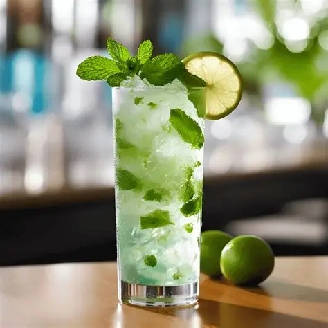

Mojito
Le Mojito est un cocktail cubain frais, léger et très désaltérant. Il associe le caractère du rhum blanc à l’acidité du citron vert et à la fraîcheur de la menthe. Le sucre apporte une touche de douceur, tandis que l’eau gazeuse rend l’ensemble pétillant et facile à boire. C’est un cocktail particulièrement apprécié pour son côté frais et estival.
Les ingrédients
- Rhum blanc
- Jus de citron vert
- Sucre de canne
- Menthe fraîche
- Eau gazeuse
- Glace pilée
- Citron vert
Préparation
- Placez la menthe et le sucre dans un verre highball.
- Pressez délicatement avec un pilon pour libérer les arômes sans déchirer les feuilles.
- Ajoutez le jus de citron vert et mélangez pour dissoudre le sucre.
- Remplissez de glace pilée.
- Versez le rhum blanc.
- Complétez avec l’eau gazeuse.
- Remuez doucement de bas en haut.
- Décorez avec un brin de menthe et une rondelle de citron vert.

aller voir: Piña Colada...Revenir à l'accueil...aller voir: Whiskey Sour